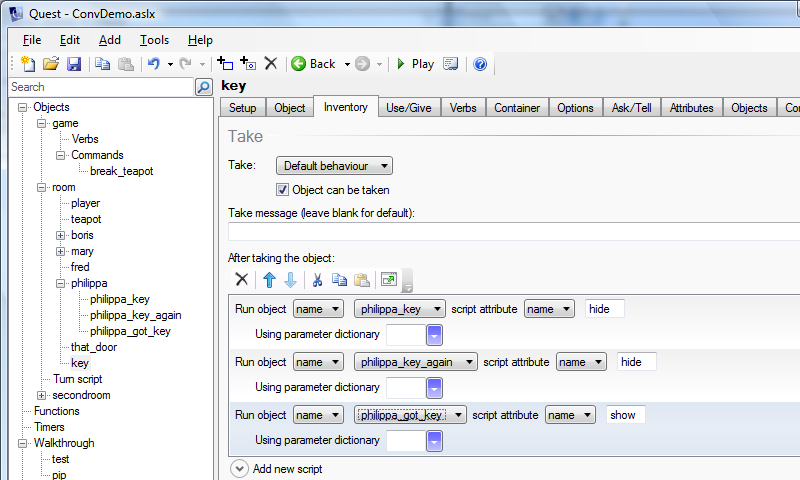

Dynamic Menus for Conversations
This is a way to set up conversations in a game. The player types "Talk To
This kind of follows on from the page on Conversations, and uses the same example, so you might like to briefly look at that.
The system is set up using the ConvLib library (right click and save to your computer):
ConvLib.aslx (now updated for Quest 5.4)
Setting Up
The first thing you need to do is to include the library in your game, so (once you have it downloaded) expand the "Advanced" object in the left pane, then click on "Included Libraries". In the right pane, click on "Add", and navigate to the downloaded file. Save and reload.
Characters
If you select a character, you should see a new tab has appeared, "Conversation". Go to this tab, and set your character's type to "Character". You may like to put in a greeting script. This will run the first time the player talks to this character, so could be introductions or just a greeting, or just leave it blank.
Topics
ConvLib treats each topic as an object in its own right. To give a character a topic, right click on the character, select "Add Object", and give it a name (I put the character's name at the start, so I know whose it is). A conversation topic must have an alias, as this is used in the menu.
Now go to the "Conversation" tab again. The type must be set to "Starting Conversation Topic" or "Conversation Topic" (depending on whether this will be available from the start, of course).
By default topic will disappear after the player has seen them. To stop that, untick the "Automatically hide after showing" box. You can have new topics appear in the menu after the player has seen this one. Add the name (not the alias) to the list. This can be a topic for another character, by the way.
Finally, at the bottom of the tab, put in the script to run when the player chooses the topic. Usually this will just be some "msg" statements, but as before this can depend on the situation, though usually there will be a better way.
Here is the same example as before:

This is set up to disappear aftert the player sees it, to be replaced by philippa_key_again:

Conversation objects have scripts on them that will show them and hide them, so we can use that to change the topics when the key is taken. On the "Inventory" tab for the key:

Both key topics will be hidden, as we do not know which wll be showing when the key is taken; a new topic will appear instead. Note that the "hide" script takes priority over "show". Once a topic has been hidden, it will not appear later even if you call show for it.
Working Example
This very simple game shows the system in use (right click and save to your computer).